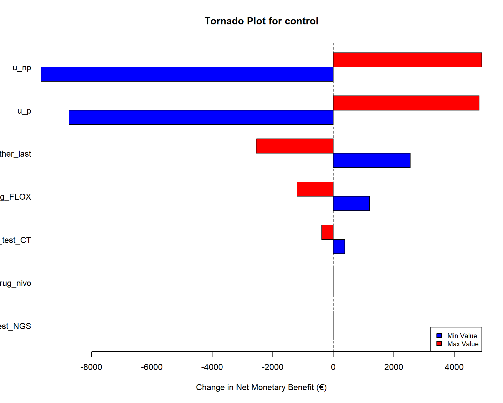
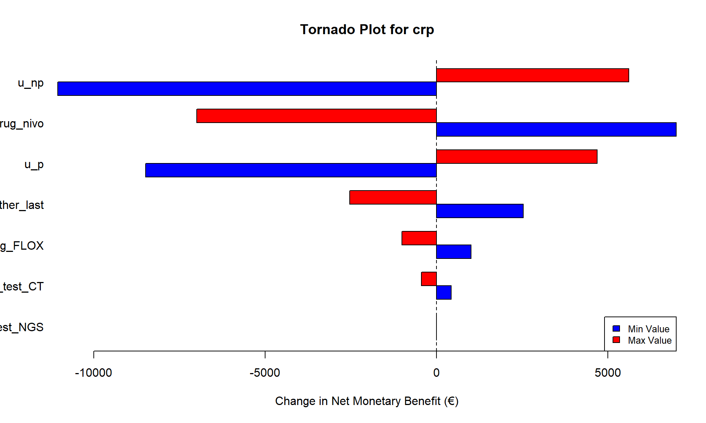
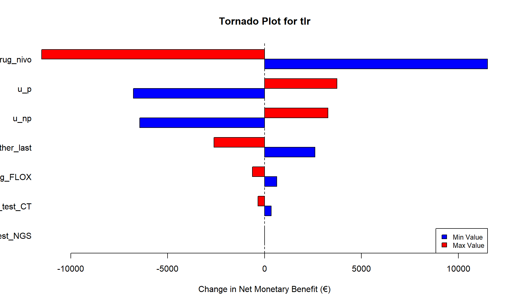
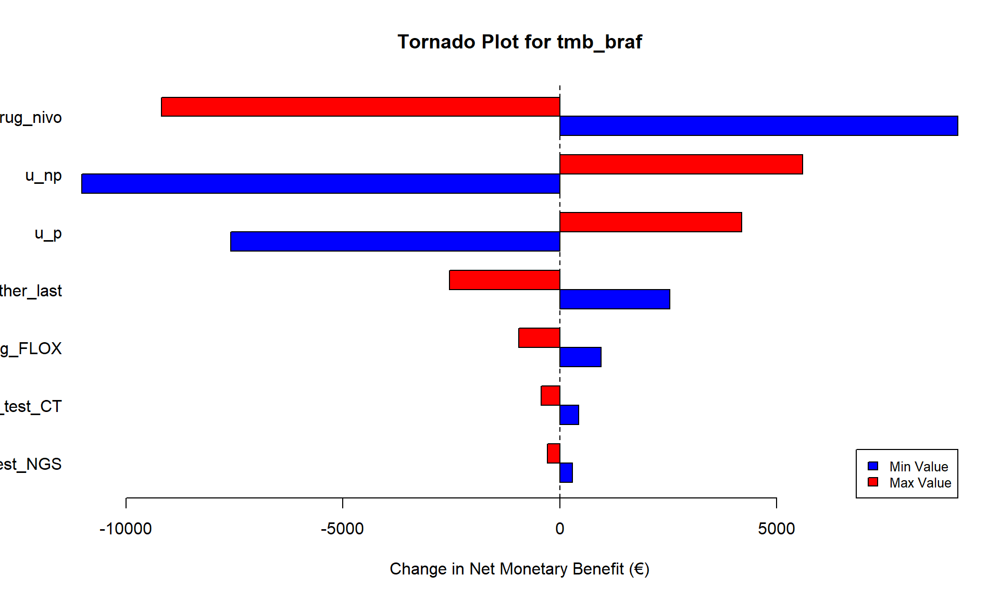

| Parameter | Description | Base Value | Min Value | Max Value | |
|---|---|---|---|---|---|
| c_drug_nivo | c_drug_nivo | Cost of Nivolumab treatment | 13923.00 | 11138.40 | 16707.6 |
| c_drug_FLOX | c_drug_FLOX | Cost of FLOX treatment | 427.00 | 341.60 | 512.4 |
| c_test_NGS | c_test_NGS | Cost of NGS testing | 1439.00 | 1151.20 | 1726.8 |
| c_test_CT | c_test_CT | Cost of CT testing | 386.00 | 308.80 | 463.2 |
| u_np | u_np | Utility - Non-progressive state | 0.91 | 0.73 | 1.0 |
| u_p | u_p | Utility - Progressive state | 0.90 | 0.72 | 1.0 |
| c_other_last | c_other_last | Other costs (last cycle) | 13803.00 | 11042.40 | 16563.6 |
One-Way Sensitivity Analysis Report
METIMMOX-1 Health Economic Evaluation
1 Executive Summary
This report presents a comprehensive one-way sensitivity analysis (OWSA) for the METIMMOX-1 health economic evaluation. The analysis examines how variations in key model parameters affect the cost-effectiveness outcomes and net monetary benefit (NMB) of different biomarker-guided treatment strategies.
1.1 Key Findings
- Base Case Optimal Strategy: control
- Parameter Range: ±20% variation from base case values
- Willingness-to-Pay Threshold: $51,000
- Parameters Tested: 7 key model parameters
- Strategies Evaluated: 4 treatment strategies
- Robustness: Optimal strategy is robust to parameter variations
2 Methods
2.1 Model Parameters
The one-way sensitivity analysis examines the following key parameters:
2.2 Analysis Approach
- Parameter Variation: Each parameter was varied individually by ±20% while holding all other parameters at base case values
- Utility Constraints: Utility parameters were capped at 1.0 to maintain validity
- Outcome Measures: Net Monetary Benefit (NMB) calculated as: NMB = Effect × WTP - Cost
- Sensitivity Metrics: Parameter impact measured by the range of NMB changes across min/max values
3 Results
3.1 Base Case Results
| Strategy | Cost | Effectiveness | Net Monetary Benefit |
|---|---|---|---|
| control | $21,748.34 | 1.8040 | $70,257.69 |
| crp | $55,992.46 | 1.9153 | $41,685.57 |
| tlr | $76,439.41 | 1.2957 | -$10,359.72 |
| tmb_braf | $68,032.43 | 1.8235 | $24,963.72 |
3.2 Tornado Diagrams
3.2.1 Optimal Strategy: control
The tornado diagram below shows the impact of parameter variations on the NMB of the optimal strategy:
Creating tornado plot for strategy: control 
Parameter Min_diff Max_diff Range
5 u_np -9661.6989 4912.2772 14573.9761
6 u_p -8739.5069 4828.3228 13567.8297
7 c_other_last 2544.6244 -2544.6244 5089.2488
2 c_drug_FLOX 1196.8973 -1196.8973 2393.7947
4 c_test_CT 384.5262 -384.5262 769.0524
1 c_drug_nivo 0.0000 0.0000 0.0000
3 c_test_NGS 0.0000 0.0000 0.00003.2.2 Alternative Strategies
3.2.2.1 Strategy: crp
Creating tornado plot for strategy: crp

3.2.2.2 Strategy: tlr
Creating tornado plot for strategy: tlr

3.2.2.3 Strategy: tmb_braf
Creating tornado plot for strategy: tmb_braf

3.3 Parameter Impact Rankings
| Strategy | Rank | Parameter | NMB Impact Range |
|---|---|---|---|
| control | 1 | u_np | $14,573.98 |
| 2 | u_p | $13,567.83 | |
| 3 | c_other_last | $5,089.25 | |
| crp | 1 | u_np | $16,667.32 |
| 2 | c_drug_nivo | $13,992.61 | |
| 3 | u_p | $13,174.49 | |
| tlr | 1 | c_drug_nivo | $23,008.97 |
| 2 | u_p | $10,511.91 | |
| 3 | u_np | $9,721.60 | |
| tmb_braf | 1 | c_drug_nivo | $18,345.94 |
| 2 | u_np | $16,616.51 | |
| 3 | u_p | $11,773.08 |
3.4 Strategy Switching Analysis
**The optimal strategy ( control ) remains unchanged across all parameter variations, indicating robust decision-making.**3.5 Detailed Parameter Sensitivity
4 Discussion
4.1 Key Insights
Most Influential Parameters: The analysis identifies which parameters have the greatest impact on cost-effectiveness outcomes across all strategies.
Decision Robustness: The optimal strategy selection is robust to the tested parameter ranges, providing confidence in the base case recommendation.
Strategy-Specific Sensitivities: Different biomarker strategies show varying sensitivities to parameter changes, with implications for implementation and monitoring.
4.2 Clinical and Policy Implications
- Parameter Prioritization: Focus data collection and validation efforts on the most influential parameters identified in this analysis
- Budget Impact: Understanding cost parameter sensitivities helps inform budget planning and negotiations
- Implementation Strategy: The robust optimal strategy supports confident implementation decisions
4.3 Limitations
- Analysis limited to ±20% parameter ranges
- Linear parameter variations may not capture non-linear relationships
- Parameter interactions not captured in one-way analysis
- Utility parameters constrained to maximum value of 1.0
5 Technical Appendix
5.1 Model Parameters and Ranges
Show code
# Display the actual parameter ranges used
cat("DSA Parameter Ranges:\n")DSA Parameter Ranges:Show code
print(dsa_ranges) pars min max
c_drug_nivo c_drug_nivo 11138.40000 16707.6
c_drug_FLOX c_drug_FLOX 341.60000 512.4
c_test_NGS c_test_NGS 1151.20000 1726.8
c_test_CT c_test_CT 308.80000 463.2
u_np u_np 0.72616 1.0
u_p u_p 0.72040 1.0
c_other_last c_other_last 11042.40000 16563.6Show code
# Show base case parameter values
cat("\nBase Case Parameter Values:\n")
Base Case Parameter Values:Show code
for (param in dsa_pars) {
cat(param, ":", l_params_base[[param]], "\n")
}c_drug_nivo : 13923
c_drug_FLOX : 427
c_test_NGS : 1439
c_test_CT : 386
u_np : 0.9077
u_p : 0.9005
c_other_last : 13803 Show code
# Show model run summary
cat("\nModel Run Summary:\n")
Model Run Summary:Show code
cat("Total model evaluations:", nrow(dsa_results), "\n")Total model evaluations: 60 Show code
cat("Strategies evaluated:", paste(strategies, collapse = ", "), "\n")Strategies evaluated: control, crp, tlr, tmb_braf Show code
cat("Time horizon:", time_horizon, "weeks\n")Time horizon: 520 weeks5.2 Computational Details
- Analysis Date: 2025-10-07
- Total Model Runs: 60
- Strategies Evaluated: 4
- Parameters Tested: 7
- Willingness-to-Pay: $51,000
- Time Horizon: 520 weeks
This report was generated automatically using R Markdown and the METIMMOX-1 health economic model.